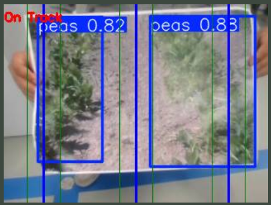
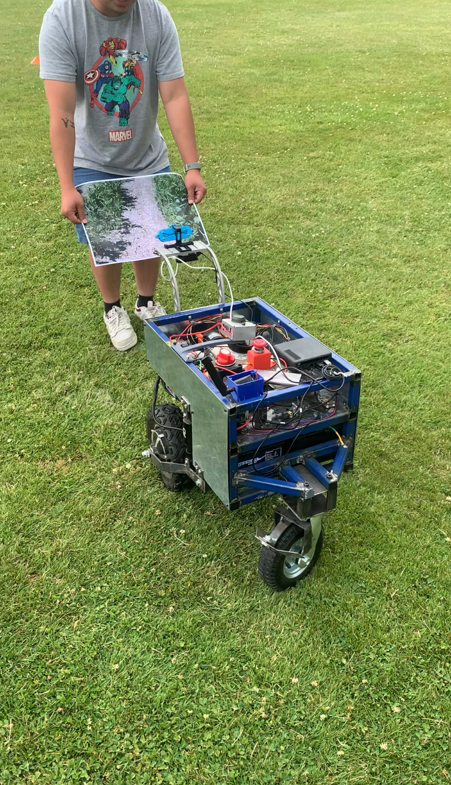
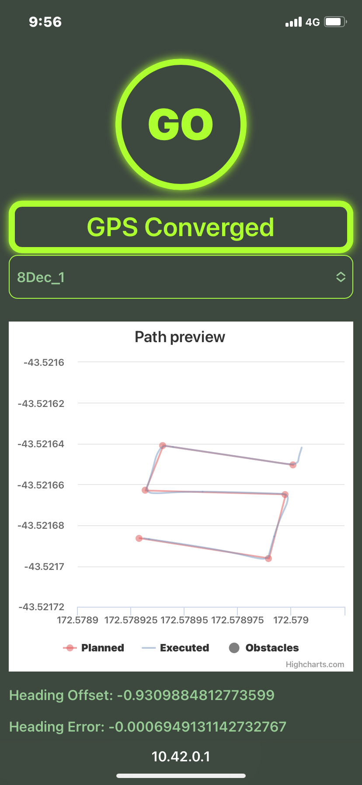
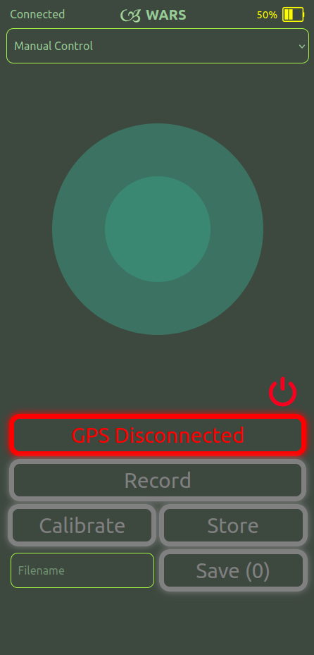

Weeding Automatic Robotic System (WARS)
Internship / Capstone Project
Overview
Over the 2025-2026 summer, I was fortunate enough to get a callaghan funded internship developing a weeding robot for Plant Research Limited (PRL). I am now continuing working on it as a final year project (capstone).
It features a central intel NUC and Arduino Mega controlling motors, valves, solenoids through ROS. It features both manual control and a map setting function which the robot autonomosly follows, detecting weeds and precicely spraying them with servo-controlled spray arms.
This is a large scale colloborative project which began development in 2021. The contributions I have made to the system include designing and implementing the control website, improvement of the navigation and path following capabilities, and implementing a computer vision model to track crop rows and align the robot within them.






Tools and skills
- Ubuntu and ROS. Rebuilt the system from Python 2, ROS melodic and Ubuntu 18.04 to 3.6, Noetic and 20.04.
- Deep learning system data collection, training and integration using YOLO.
- Structured test regeime creation and execution.
- Communication with clients of non-engineering backgrounds.
- Leadership, team management and collaboration
Limitations and Improvements
- The robot uses glyphosate which is proven to have adverse enviornmental and health impacts.
- Spray system currently at 70% accuracy, currently being improved.
- Navigational PID systems cause >100mm deviation, currently being improved.